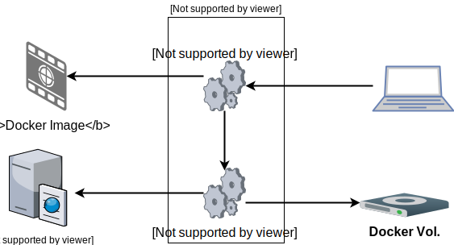

What do we want to learn?

- How to define a docker-compose.yml
- How to use Docker Networks/Volumes
- How to Backup/Restore a Docker Container
- Reproducibility, running in parallel
What is Docker Compose
version: '3'
services:
frontend:
...
backend:
...
database:
....
- Tool for running multi container apps
- Defined with the YAML file docker-compose.yml
- Add container managed at once
The example
- The application is a todo application
- The todo application needs these env vars:
- DB_USER,DB_PASSWORD
- DB_URL=jdbc:mysql://[host]:[port]/[db]
- The host running the Docker Container must have internet access
- The MariaDb Docker Image: https://hub.docker.com/_/mariadb/
Preparations
- Create the directory compose-example-1/todo-app
- Copy the app.jar to directory todo-app
- Copy the Dockerfile for todo-ap to directory todo-app
- Create a file named commands.sh
- Create a file named docker-compose.yml
The Docker Volume
version: '3'
...
- Define the Docker Volume todo-db-vol in the docker-compose.yml
- Test the definition by executing
docker-compose updocker-compose down -v
Solution
version: '3'
volumes:
todo-db-vol:
The Docker Network
version: '3'
...
- Define the Docker Network todo-net in the docker-compose.yml
- Test the definition by executing
docker-compose updocker-compose down -v
Solution
version: '3'
networks:
todo-net:
The todo-db service
version: '3'
services:
...
- Define the Service todo-db in the docker-compose.yml
- Test the definition by executing
docker-compose updocker-compose down -v
Solution
version: '3'
services:
todo-db:
image: library/mariadb:latest
environment:
- MYSQL_ROOT_PASSWORD=todo
- MYSQL_DATABASE=todo
- MYSQL_USER=todo
- MYSQL_PASSWORD=todo
networks:
- todo-net
volumes:
- todo-db-vol:/var/lib/mysql
The todo-app service
version: '3'
services:
...
- Define the Service todo-app in the docker-compose.yml
- Docker Compose shall build the image for us
- Test the definition by executing
docker-compose updocker-compose down -v
Solution
version: '3'
services:
todo-app:
build:
context: ./todo-app
environment:
- DB_URL=jdbc:mysql://todo-db:3306/todo
- DB_USER=todo
- DB_PASSWORD=todo
networks:
- todo-net
ports:
- 8080:8080
depends_on:
- todo-db
Backup the database
# 1. Stop the Docker Containers
docker-compose ...
# 2. Backup the database
docker run ...
# 3. Start the Docker Containers
docker-compose ...
- Start your infrastructure
- Create entries in the todo app
- Write the command for stopping the Docker Containers
- Write the command for running a backup Docker Container
- Write the command for starting the Docker Containers
Solution
# 1. Stop/Delete the Docker Containers
docker-compose down
# 2. Backup the database
# Be aware of the directory prefix!!!
docker run --rm \
--volume simple_todo-db:/var/lib/mysql \
--volume $(pwd):/backup \
alpine tar cvf /backup/backup.tar -C /var/lib/mysql .
# Create/Start the Docker Containers
docker-compose up -d
Restore the database
# 1. Stop the Docker Containers
docker-compose ...
# 2. Restore the database
docker run ...
# 3. Start the Docker Containers
docker-compose ...
- Clear the infrastructure by executing
docker-compose down -v
- Write the command for stopping the Docker Containers
- Write the command for running a restoring Docker Container
- Write the command for starting the Docker Containers
Solution
# 1. Stop/Delete the Docker Containers
docker-compose down
# 2. Perform the restore
# Be aware of the directory prefix!!!
docker run --rm \
--volume simple_todo-db:/var/lib/mysql \
--volume $(pwd):/restore \
alpine sh -c "rm -rf /var/lib/mysql/* \
&& tar xvf /restore/backup.tar -C /var/lib/mysql --strip 1"
# 3. Create/Start the Docker Containers
docker-compose up -d
Add healthchecks and restart
# Test for healthy database
test: ["CMD", "mysql", \
"--host=localhost", "--database=todo", \
"-utodo", "-ptodo", "-e", "Select 1"]
# Test for healthy todo-app
test: ["CMD", "wget", \
"http://localhost:8080/health"]
- The test array needs to be inline!!!!!!
- Define an healthcheck and restart to the todo-app
- AddDefine an healthcheck and restart to the todo-db
- Test the definition by executing
docker-compose updocker-compose ps
Solution todo-db
version: '3'
services:
todo-db:
healthcheck:
test: ["CMD", "mysql", "--host=localhost", "--database=todo", "-utodo", "-ptodo", "-e", "Select 1"]
interval: 2s
timeout: 11s
retries: 5
restart: on-failure
Solution todo-app
version: '3'
services:
todo-app:
healthcheck:
test: ["CMD", "wget", 'http://localhost:8080/health']
interval: 2s
timeout: 31s
retries: 15
restart: always
Deploy a second infrastructure
- Copy the directory compose-example-1 to compose-example-2
- Find out what needs to be changed, and do it
- Start both infrastructures with
docker-compose up
- Backup compose-example-1 todo-db
- Restore in compose-example-2 todo-db
Solution
- Change todo-app port to 9080 of compose-example-2
- Perform backup on compose-example-1 todo-db
- Perform restore on compose-example-2 todo-db
Extract parameters
- Find out how to provide external properties
- Extract all variables from docker-compose.yml
- Provide property values for two infras
Solution
# in your CLI
TODO_DB_PWD=todo
TODO_DB_USR=todo
TODO_DB_DB=todo
TODO_APP_PORT=9090
# docker-compose.yml
version: '3'
services:
todo-app:
environment:
- DB_URL=jdbc:mysql://todo-db:3306/${TODO_DB_DB}
- DB_USER=${TODO_DB_USR}
- DB_PASSWORD=${TODO_DB_PWD}
networks:
- todo-net
ports:
- ${TODO_APP_PORT}:8080
- Extract all parameters to a file named .env
- Use the variables like this
$PARAM_1 or ${PARAM_1}